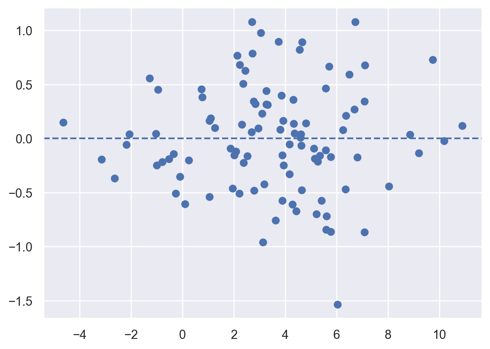
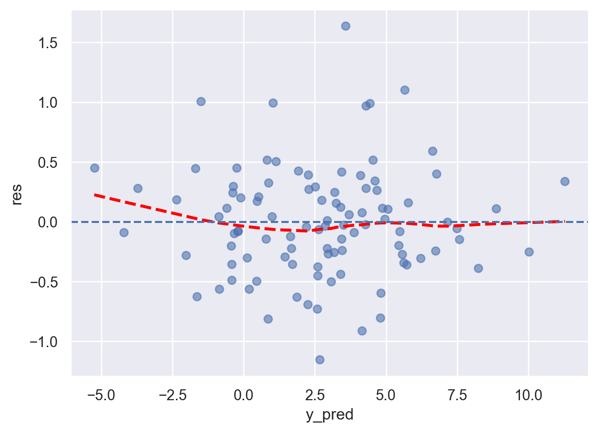
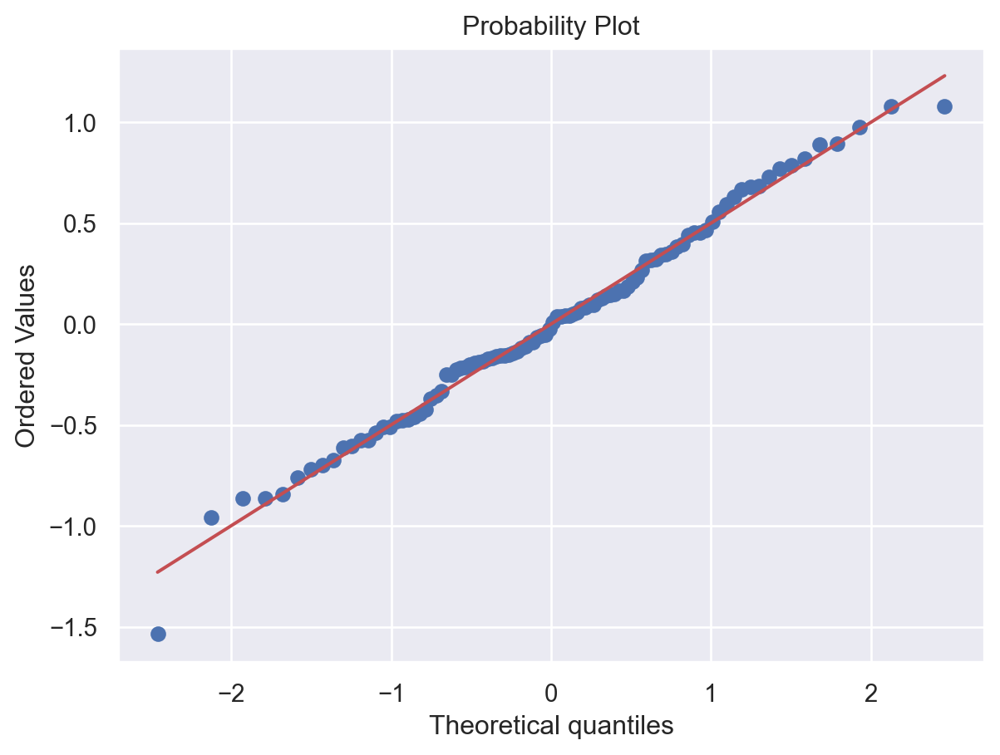
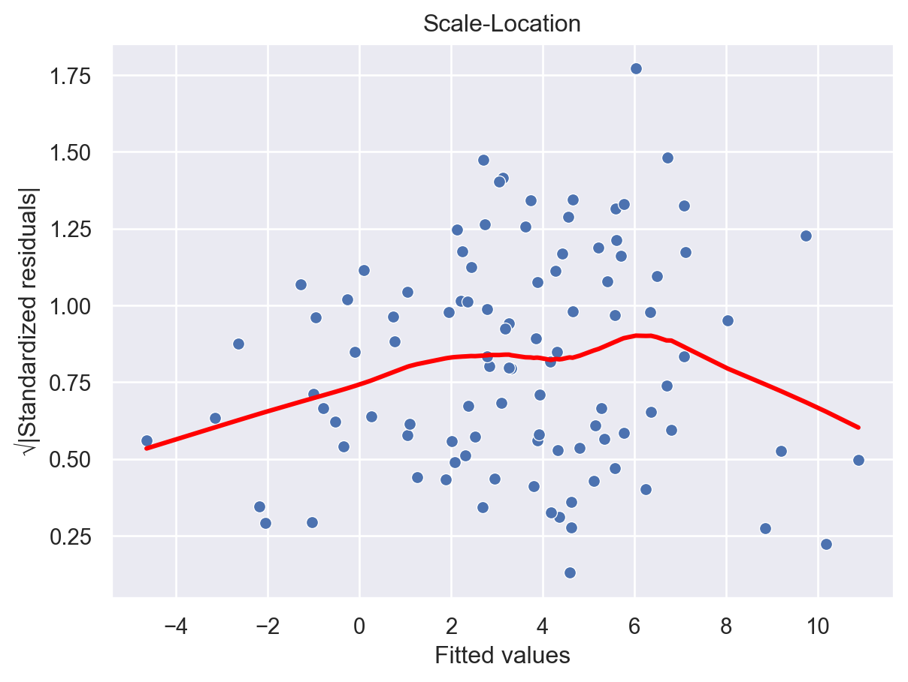
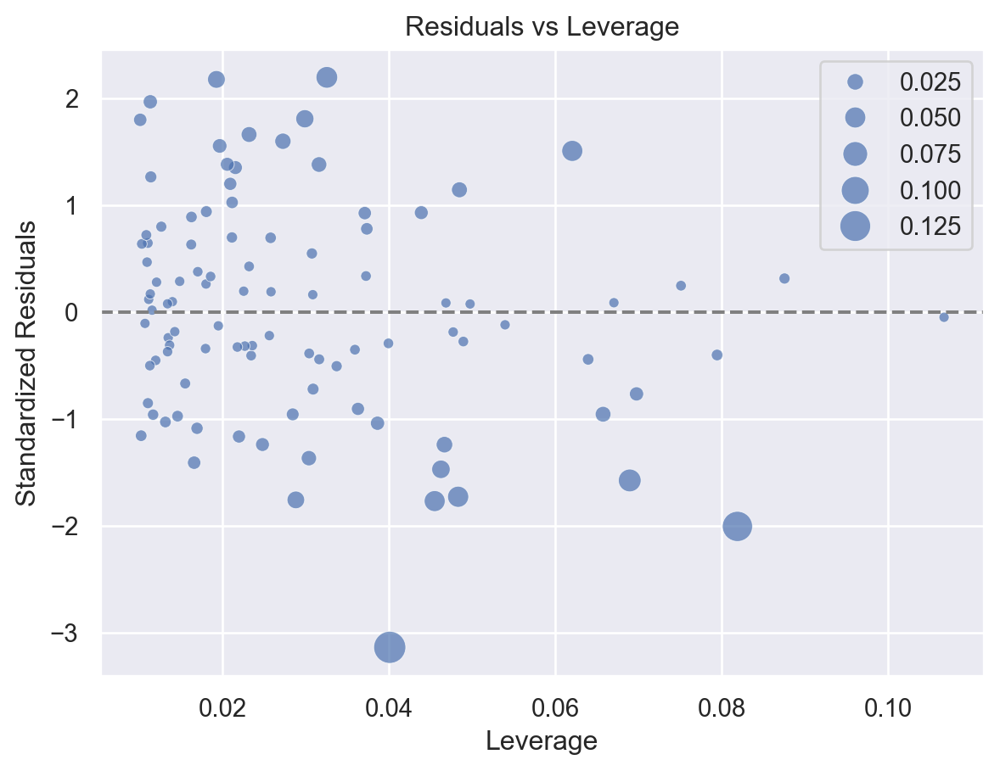
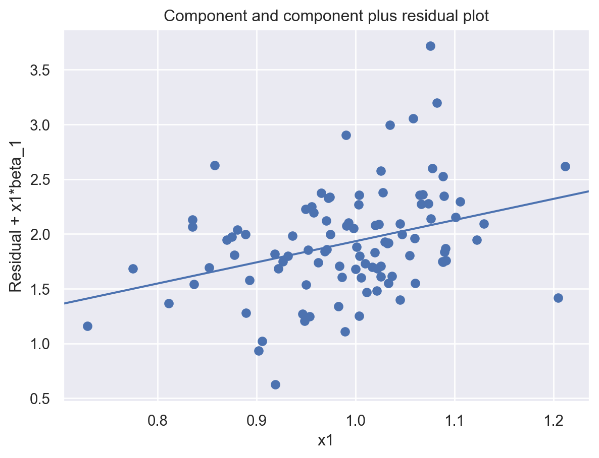
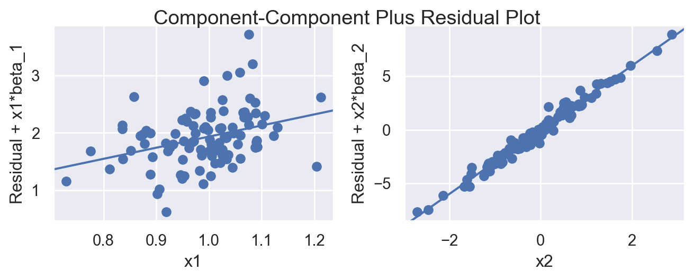
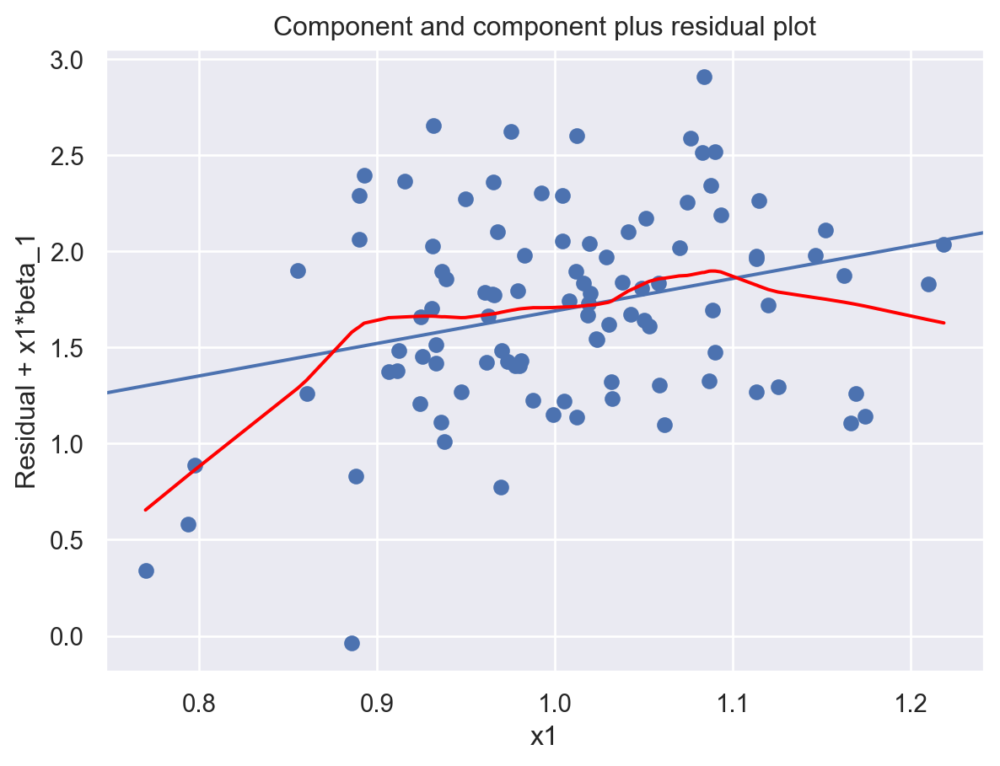
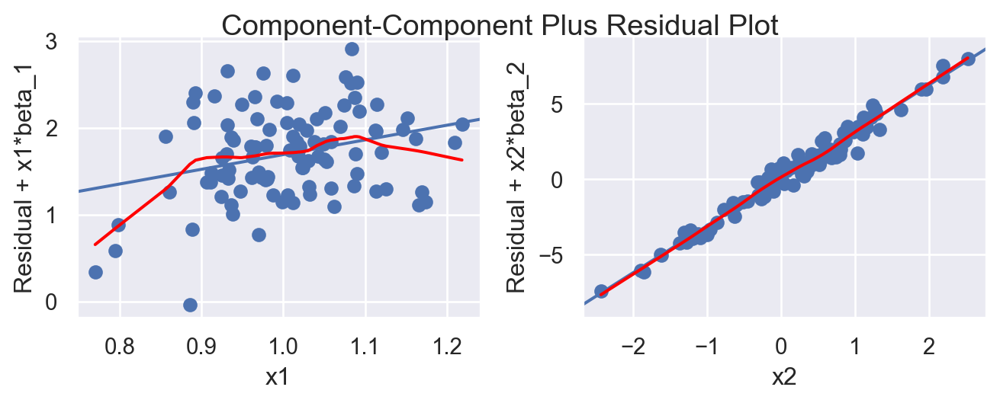

import numpy as np
import pandas as pd
np.random.seed(1)
n = 100
x1 = np.random.normal(1, 0.1, size=n)
x2 = np.random.normal(0, 1, size=n)
y = 1 + 2 * x1 + 3 * x2 + np.random.normal(0, 0.5, size=n)
X = pd.DataFrame({'x1': x1, 'x2': x2})3 Linear Regression
This section offers a brief review of linear regression, with the main emphasis on its Python implementation through examples.
3.1 Quick Overview
Linear regression is the fundamental supervised learning method for a quantitative response. It models the conditional mean of the response as a linear function of the predictors: \[ y = \beta_0 + \beta_1 x_1 + \cdots + \beta_p x_p + \varepsilon. \]
In matrix notation, this can be written as \[ \vb y = \vb X\beta + \varepsilon. \] Here, \(\vb X\) is the design matrix, whose first column is a column of ones representing the intercept.
3.2 The Ordinary Least Squares Estimator
The most common fitting method is ordinary least squares (OLS). It chooses the coefficient vector \(\beta\) that minimizes the residual sum of squares (\(\rss\)):
\[ \rss(\beta) = \sum_{i=1}^n (y_i - \hat{y}_i)^2 = \norm{\vb y - \vb X\beta }_2^2. \]
Theorem 3.1 (OLS Estimator) The coefficient vector that minimizes \(\rss\) is \[ \hat{\beta}_{\ols} = (\vb X^\top \vb X)^{-1}\vb X^\top \vb y, \] provided that \(\vb X^\top \vb X\) is invertible. This estimator is called the ordinary least squares (OLS) estimator.
Once the coefficients are estimated, the fitted value for observation \(i\) is
\[ \hat{y}_i = \hat{\beta}_0 + \hat{\beta}_1 x_{i1} + \cdots + \hat{\beta}_p x_{ip}. \]
Interpretability is one of the main advantages of linear regression compared with many more complex models.
- The coefficient \(\hat\beta_j\) describes how the predicted response changes when \(x_j\) increases by one unit, while the other predictors are held fixed.
- When interaction terms are present, a main effect cannot be interpreted in isolation. The effect of a predictor depends on the values of the variables with which it interacts.
- If predictors are centered so that \(0\) corresponds to the average of the original variable, the intercept represents the predicted response at the average predictor levels.
Note
Classical regression primarily focuses on inference and model assumptions, such as normality, constant variance, and independence of errors.
As discussed earlier in the statistical learning basics section, statistical learning places greater emphasis on predictive performance and generalization to unseen data. As a result, estimated test error and model validation often play a more central role than formal inference procedures.
3.3 Linear Regression in Python
There are many Python libraries for fitting linear regression models. In this course, we use scikit-learn as the primary modeling tool, with support from pandas and numpy for data manipulation, and matplotlib and seaborn for visualization.
To demonstrate the code, we generate a dataset with 2 predictors and 1 response variable, where \(\beta_0 = 1\), \(\beta_1 = 2\), and \(\beta_2 = 3\).
When using sklearn, a dataset is typically represented by features X and a target variable y.
Xusually has 2 dimensions (number of samples × features).yis usually 1-dimensional, though it may also be represented as a 2-dimensional array with a single column.
Both X and y can be stored as either numpy arrays or pandas objects.
In this example we construct X as a DataFrame, since column names make it easier to modify variables during the model-building stage, e.g. when adding interactions or transformations.
3.3.1 Linear regression models
We fit a linear regression model using LinearRegression.
from sklearn.linear_model import LinearRegression
model = LinearRegression()
model.fit(X, y)
print(f"intercept: {model.intercept_}")
print(f"coefficients: {model.coef_}")intercept: 1.2995891152586192
coefficients: [1.69051379 3.10918568]We can then use the fitted model to generate predictions and compute residuals.
y_pred = model.predict(X)
res = y - y_pred3.3.2 Measure model performance
sklearn provides many performance measures, most of which can be found in sklearn.metrics. A common syntax is metric(y_true, y_pred).
from sklearn.metrics import mean_squared_error, r2_score, root_mean_squared_error
y_pred = model.predict(X)
print(f"MSE: {mean_squared_error(y, y_pred)}")
print(f"R2: {r2_score(y, y_pred)}")
print(f"RMSE: {root_mean_squared_error(y, y_pred)}")Each model also provides a built-in scoring method. For a specific model, you can check the official documentation to see which metric is used, but the general idea is:
- regressors use
r2_score, and - classifiers use
accuracy
model.score(X, y)0.97232495823124653.3.3 Model Diagnostics
In traditional regression, diagnostic plots are powerful tools for detecting potential problems in a fitted model. However, statistical learning primarily focuses on prediction performance rather than model assumptions. Therefore, diagnostics are not our primary focus in this course, and this section is optional.
Click for more details.
In Python there is no single function that automatically produces all diagnostic plots. Instead, we usually combine tools from several libraries. In these notes we focus on basic tools from statsmodels, scipy, seaborn, and matplotlib.
We can also use seaborn’s theme to improve the appearance of plots produced by matplotlib-based tools.
import seaborn as sns
sns.set_theme()We compute several quantities needed for residual analysis. Although our primary modeling tool is sklearn, residual diagnostics are easier with statsmodels. Therefore we construct a statsmodels model that holds the same data.
Since we already have the feature matrix and the target vector, the fastest way to use statsmodels is through statsmodels.api (as opposed to the R-style interface statsmodels.formula.api).
import statsmodels.api as sm
X_sm = sm.add_constant(X)
model = sm.OLS(y, X_sm).fit()
model.paramsconst 1.299589
x1 1.690514
x2 3.109186
dtype: float64The fitted values, residuals, leverage, Cook’s distance, and other quantities can be extracted directly from this model object. We wrap them into DataFrames for easier plotting.
y_pred = model.fittedvalues
res = model.resid
model_output = pd.DataFrame({
"y_true": y,
"y_pred": y_pred,
"res": res
})influence = model.get_influence()
std_resid = influence.resid_studentized_internal
sqrt_std_resid = np.sqrt(np.abs(std_resid))
leverage = influence.hat_matrix_diag
cooks = influence.cooks_distance[0]
df_diag = pd.DataFrame({
"leverage": leverage,
"std_resid": std_resid,
"sqrt_std_resid": sqrt_std_resid,
"cooks": cooks
})
NoteResidual plots
The most basic residual plot is simply residuals versus fitted values.
import matplotlib.pyplot as plt
plt.scatter(y_pred, res)
plt.axhline(0, linestyle="--")
If we use seaborn, additional features are computed automatically. For example, setting lowess=True will display a smooth trend curve.
import seaborn as sns
sns.regplot(
data=model_output,
x="y_pred",
y="res",
lowess=True,
scatter_kws={"alpha": 0.6},
line_kws={"color": "red", "linestyle": "--"},
)
plt.axhline(0, linestyle="--")
NoteQ-Q plot
import scipy.stats as stats
stats.probplot(res, dist="norm", plot=plt);
NoteScale-location plot
import numpy as np
sns.scatterplot(x=y_pred, y=sqrt_std_resid, data=df_diag)
sns.regplot(
x=y_pred,
y=sqrt_std_resid,
data=df_diag,
lowess=True,
scatter=False,
line_kws={"color": "red"}
)
plt.xlabel("Fitted values")
plt.ylabel("√|Standardized residuals|")
plt.title("Scale-Location");
NoteLeverage with Cook’s distance
sns.scatterplot(
x=leverage,
y=std_resid,
data=df_diag,
size=cooks,
sizes=(20, 200),
alpha=0.7
)
plt.axhline(0, linestyle="--", color="gray")
plt.xlabel("Leverage")
plt.ylabel("Standardized Residuals")
plt.title("Residuals vs Leverage");
NotePartial residual plots
Partial residual plots help visualize the relationship between a predictor and the response after adjusting for the effects of other predictors. plot_ccpr() from sm.graphics can be used to generate partial residual plots.
sm.graphics.plot_ccpr(model, "x1");
To generate plots for all predictors at once, we can use
sm.graphics.plot_ccpr_grid(model);
The default plot_ccpr() does not include a smooth curve. If a smooth trend line is desired, we can compute it using the lowess() function and add it manually.
from statsmodels.nonparametric.smoothers_lowess import lowess
fig = sm.graphics.plot_ccpr(model, "x1")
ax = fig.axes[0]
x = ax.lines[0].get_xdata()
y = ax.lines[0].get_ydata()
smooth = lowess(y, x, frac=0.5)
ax.plot(smooth[:, 0], smooth[:, 1], color="red")
The same idea can be applied to the grid version.
fig = sm.graphics.plot_ccpr_grid(model)
for ax in fig.axes:
if len(ax.lines) != 0:
x = ax.lines[0].get_xdata()
y = ax.lines[0].get_ydata()
smooth = lowess(y, x, frac=0.5)
ax.plot(smooth[:, 0], smooth[:, 1], color="red")
3.4 Model evaluation
3.4.1 Train-Test Split
Instead of estimating test performance indirectly from the training data, we can evaluate a model more directly by using data that were not used to fit the model. This leads to the idea of data splitting:
The dataset is divided into two parts:
- Training set: used to fit the model.
- Test set: used to evaluate prediction performance.
After fitting the model on the training set, predictions are made on the test set, and performance measures such as MSE are computed. This provides a more realistic estimate of how the model performs on new data.
In many situations we also need to choose between several competing models or tuning parameters. To avoid using the test data for model selection, a third subset is often introduced.
- Training set: used to fit models.
- Validation set: used to compare models and select tuning parameters.
- Test set: used only once at the end to estimate the final model’s performance.
This separation helps prevent overly optimistic performance estimates.
In sklearn, the function train_test_split() from sklearn.model_selection is commonly used to split the data into a training set and a test set.
import numpy as np
import pandas as pd
from sklearn.model_selection import train_test_split
n = 10
rng = np.random.default_rng(1)
x1 = rng.normal(loc=1, scale=0.1, size=n)
x2 = rng.normal(loc=0, scale=1, size=n)
y = 1 + 2 * x1 + 3 * x2 + rng.normal(0, 0.5, size=n)
X = pd.DataFrame({'x1': x1, 'x2': x2})
X_train, X_test, y_train, y_test = train_test_split(X, y, test_size=0.2, random_state=0)The argument test_size=0.2 means that 20% of the data are used as the test set, while the remaining 80% are used as the training set. The argument random_state=0 ensures reproducibility.
3.4.2 Cross-Validation
When the dataset is not large, splitting the data into separate training, validation, and test sets may leave too little data for model fitting. In such cases, cross-validation is commonly used to estimate validation performance more efficiently.
The most common form is \(k\)-fold cross-validation.
- The available training data are divided into \(k\) roughly equal parts (called folds).
- For each fold:
- The model is trained on \(k-1\) folds.
- The remaining fold is used as a validation set.
- This process is repeated \(k\) times so that each fold serves once as the validation set.
- The validation errors from all folds are averaged to estimate the model’s expected test error.
Cross-validation is primarily used to estimate test error or to compare competing models. When it is used for model selection, two additional steps are typically performed. Note that cross-validation uses only the training data and does not involve the test set.
- After the best model configuration has been selected, the model is retrained on the entire training data.
- The final model is then evaluated once on the test set, which serves as an unbiased estimate of its performance on new data.
In sklearn, there are several ways to perform \(k\)-fold cross-validation. From KFold to cross_validate and then cross_val_score, the interface becomes easier to use, but also less flexible.
The three approaches perform essentially the same task, but at different levels of abstraction.
Note
KFold
KFold from sklearn.model_selection is used to split the dataset into \(k\) groups, called folds. In each iteration, one fold is used as the validation set and the remaining folds are used as the training set.
from sklearn.model_selection import KFold
kf = KFold(n_splits=5)
for train_idx, val_idx in kf.split(range(10)):
print(train_idx, val_idx)[2 3 4 5 6 7 8 9] [0 1]
[0 1 4 5 6 7 8 9] [2 3]
[0 1 2 3 6 7 8 9] [4 5]
[0 1 2 3 4 5 8 9] [6 7]
[0 1 2 3 4 5 6 7] [8 9]- Here I use
range(10)insidekf.split()because only the indices are needed. If a dataset is passed instead, the output is still the indices for the training set and validation set. - If you want the split to be randomized, set
shuffle=Truewhen creatingKFold. In that case, you may also specifyrandom_stateto make the result reproducible.
Let us now apply KFold to our simulated dataset.
from sklearn.model_selection import KFold
from sklearn.linear_model import LinearRegression
from sklearn.metrics import r2_score
kf = KFold(n_splits=5, shuffle=True, random_state=1)
cv_scores = []
for train_idx, val_idx in kf.split(X):
X_train, X_val = X.iloc[train_idx], X.iloc[val_idx]
y_train, y_val = y[train_idx], y[val_idx]
model = LinearRegression()
model.fit(X_train, y_train)
y_pred = model.predict(X_val)
mse = r2_score(y_val, y_pred)
cv_scores.append(mse)
print(cv_scores)
print(sum(cv_scores) / len(cv_scores))[-1.473916411368759, 0.3859310045149441, -0.7579033227389274, 0.7043154482687257, 0.8824788076538627]
-0.051818894734030785This gives the validation MSE for each fold, together with their average.
Note
cross_validate
Using KFold directly is somewhat manual. We may use cross_validate() to automate the cross-validation process. Depending on the arguments supplied, cross_validate() may internally use KFold.
You may specify which scoreing methods useing scoring=[] argument. The default choice will be the default choice from the model. In LinearRegression case, the default one is r2_score.
from sklearn.model_selection import cross_validate
model = LinearRegression()
cv_result = cross_validate(model, X, y, cv=5)
cv_result{'fit_time': array([0.00113893, 0.00116563, 0.00089574, 0.00084281, 0.00080681]),
'score_time': array([0.00090671, 0.00073767, 0.00060749, 0.0005796 , 0.00055027]),
'test_score': array([-0.39366753, 0.10843993, 0.60326202, 0.73431811, 0.91493437])}If you are only interested in the validation scores, you may extract them directly.
cv_result['test_score']array([-0.39366753, 0.10843993, 0.60326202, 0.73431811, 0.91493437])- You may choose different scoring methods. More info can be found in the document.
- Here the MSE values are negative because
sklearnfollows the convention that larger scores are better. - If
cv=5, thenKFold(5, shuffle=False)is used by default. If you want randomized folds, you may pass aKFoldobject explicitly.
cv_result = cross_validate(
model, X, y, cv=KFold(5, shuffle=True, random_state=1)
)
cv_result["test_score"]array([-1.47391641, 0.385931 , -0.75790332, 0.70431545, 0.88247881])You may compare these scores with the ones obtained in the KFold section. Usually, the overall cross-validation score is taken to be the mean of the fold scores.
cv_result['test_score'].mean()np.float64(-0.051818894734030764)
Note
cross_val_score
cross_val_score() is a shorter way to obtain cv_result["test_score"] from the cross_validate() section. The arguments cv and scoring work in the same way.
from sklearn.model_selection import cross_val_score
cv_scores = cross_val_score(
model, X, y, cv=KFold(5, shuffle=True, random_state=1)
)
cv_scoresarray([-1.47391641, 0.385931 , -0.75790332, 0.70431545, 0.88247881])cv_scores.mean()np.float64(-0.051818894734030764)So cross_val_score() is convenient when you only need the validation scores and do not need the extra information returned by cross_validate().
Cross-validation is often used to compare competing models. One important application is hyperparameter tuning. In this setting, we compare models from the same family under different choices of hyperparameters. In sklearn, this process is commonly carried out with GridSearchCV.
The CV procedure is summarized (again) as follows:
- Split the training data into several folds.
- For each hyperparameter combination, hold out one fold as the validation set and use the remaining folds as the training set.
- Fit the model on the training folds and evaluate its performance on the validation fold.
- Repeat this process so that each fold serves once as the validation set. The average validation score is the cross-validation score for that hyperparameter combination.
- Repeat Steps 2–4 for all hyperparameter combinations, and select the combination with the best average cross-validation score.
- Final step: After the best hyperparameter combination is identified, the model is refit on the entire training set using these hyperparameters.
GridSearchCV automates this process. To illustrate the idea, suppose we want to decide whether a linear regression model should be fit with or without an intercept.
First, specify the hyperparameters to be tuned:
params = {"fit_intercept": [True, False]}
Important
Pipeline and ColumnTransformer
If the model is wrapped inside a Pipeline or a ColumnTransformer (discussed later), hyperparameters inside a step must be referred to using the syntax step__param with two underscores.
For example, suppose a pipeline contains a step named linear, and that step has a hyperparameter called fit_intercept. Then the parameter grid should be written as
params = {"linear__fit_intercept": [True, False]}Next, construct the grid search.
- The argument
cvis specified in the same way as in ordinarycross-validation. - The argument
refit=Truecontrols whether the model is refit on the entire training set using the best hyperparameters. The default value isTrue.
from sklearn.model_selection import GridSearchCV
gs = GridSearchCV(model, param_grid=params, cv=5, refit=True)
gs.fit(X, y)GridSearchCV(cv=5, estimator=LinearRegression(),
param_grid={'fit_intercept': [True, False]})In a Jupyter environment, please rerun this cell to show the HTML representation or trust the notebook. On GitHub, the HTML representation is unable to render, please try loading this page with nbviewer.org.
Parameters
LinearRegression()
Parameters
After fitting, the best estimator and other information about the search can be obtained.
gs.best_estimator_LinearRegression()In a Jupyter environment, please rerun this cell to show the HTML representation or trust the notebook.
On GitHub, the HTML representation is unable to render, please try loading this page with nbviewer.org.
Parameters
gs.best_params_{'fit_intercept': True}gs.best_score_np.float64(0.3934573792950554)gs.cv_results_ stores the results for all folds. Itself is a dict. Usually we convert it into a DataFrame.
import pandas as pd
df_result = pd.DataFrame(gs.cv_results_)
df_result| mean_fit_time | std_fit_time | mean_score_time | std_score_time | param_fit_intercept | params | split0_test_score | split1_test_score | split2_test_score | split3_test_score | split4_test_score | mean_test_score | std_test_score | rank_test_score | |
|---|---|---|---|---|---|---|---|---|---|---|---|---|---|---|
| 0 | 0.000933 | 0.000131 | 0.000730 | 0.000207 | True | {'fit_intercept': True} | -0.393668 | 0.108440 | 0.603262 | 0.734318 | 0.914934 | 0.393457 | 0.476013 | 1 |
| 1 | 0.000735 | 0.000014 | 0.000549 | 0.000015 | False | {'fit_intercept': False} | 0.658116 | -1.084424 | 0.477951 | 0.833464 | 0.949111 | 0.366843 | 0.742985 | 2 |
Then we could get access to the mean test score or other metrics to see how scores are changed along the parameters.
df_result["mean_test_score"]0 0.393457
1 0.366843
Name: mean_test_score, dtype: float64
Note
n_jobs
You may assign n_jobs for parallel computing. You may leave it None right now. We will come back to it later when we really need it.
3.4.3 Modern Hyperparameter Tuning
Historically, one of the most common approaches to hyperparameter tuning was exhaustive grid search, which is introduced above. This approach is conceptually simple and works well when the number of hyperparameters is small. As a result, GridSearchCV became one of the standard tools in early machine learning workflows.
However, as models became more complicated, researchers observed that exhaustive grid search often wastes substantial computation. In many problems, only a few hyperparameters strongly affect performance, while others have relatively small influence.
A particularly influential paper [1] by Bergstra and Bengio showed that random search can often outperform grid search in high-dimensional hyperparameter spaces. The main idea is that random search explores more distinct values along important hyperparameter directions instead of spending excessive computation on unimportant dimensions.
This led to the widespread use of methods such as:
RandomizedSearchCV- Bayesian optimization
- TPE (Tree-structured Parzen Estimator)
- Optuna
- AutoML frameworks
Modern frameworks such as Optuna use adaptive search strategies. Instead of testing hyperparameters independently, they use information from previous trials to guide future searches toward more promising regions of the hyperparameter space. These methods have become increasingly important for large and computationally expensive models.
Nevertheless, in this course we will mainly use ordinary grid search because it is simple, transparent, and easy to understand. For most models in this course, naive grid search is already sufficient.
Only for more computationally expensive models such as XGBoost will we occasionally use more practical workflows such as:
- random search followed by refined grid search
- stagewise tuning
- early stopping
3.5 Feature Engineering and Preprocessing
Feature engineering refers to modifying or creating predictors in order to better represent the relationship between the predictors and the response. Here we mainly cover the sklearn way to perform feature engineering.
NoteModeling Perspective
In statistical learning (commonly implemented using sklearn), the primary goal is predictive performance. Models are therefore typically constructed by building a feature matrix, and modifying a model usually means modifying the feature matrix rather than changing a model formula.
In contrast, traditional regression analysis (commonly implemented using statsmodels) allows explicit specification of statistical models through a formula language. This approach is convenient when precise control of model terms and statistical inference are required.
3.5.1 Creating Features Manually
Before introducing automated tools, we can always create new predictors directly by modifying the original dataset.
import pandas as pd
X = pd.DataFrame({'x1': [0, 2, 4], 'x2': [1, 3, 5]})
X| x1 | x2 | |
|---|---|---|
| 0 | 0 | 1 |
| 1 | 2 | 3 |
| 2 | 4 | 5 |
For example, we can add the squared term of \(x_2\) and the interaction term \(x_1x_2\) to form a new feature matrix X2.
X2 = X.copy()
X2["x2_sq"] = X["x2"] ** 2
X2["x1_x2"] = X["x1"] * X["x2"]
X2| x1 | x2 | x2_sq | x1_x2 | |
|---|---|---|---|---|
| 0 | 0 | 1 | 1 | 0 |
| 1 | 2 | 3 | 9 | 6 |
| 2 | 4 | 5 | 25 | 20 |
This corresponds to fitting a model of the form \[ y=\beta_0+\beta_1x_1+\beta_2x_2+\beta_3x_2^2+\beta_4x_1x_2+\varepsilon. \]
Tip
Although the model is called linear regression, it can represent nonlinear relationships by including transformed predictors such as \(x^2\), \(\log x\), or \(\sqrt{x}\). The model remains linear because it is linear in the coefficients \(\beta\).
3.5.2 Polynomial Features
Click to expand.
When many predictors are present, manually creating polynomial and interaction terms can become tedious. In such cases we can use PolynomialFeatures from sklearn.preprocessing, which automatically generates polynomial and interaction terms up to the specified degree.
from sklearn.preprocessing import PolynomialFeatures
poly = PolynomialFeatures(degree=2, interaction_only=False, include_bias=True)
poly.fit_transform(X)array([[ 1., 0., 1., 0., 0., 1.],
[ 1., 2., 3., 4., 6., 9.],
[ 1., 4., 5., 16., 20., 25.]])The argument interaction_only=False means that both squared terms and interaction terms are included. For example, if the original variables are \(x_1\) and \(x_2\), then the transformed matrix contains terms such as \[
1,x_1,x_2,x_1^2,x_1x_2,x_2^2.
\]
poly2 = PolynomialFeatures(degree=2, interaction_only=True, include_bias=False)
poly2.fit_transform(X)array([[ 0., 1., 0.],
[ 2., 3., 6.],
[ 4., 5., 20.]])interaction_only=True means that only interaction terms are added, while powers such as \(x_1^2\) and \(x_2^2\) are excluded. In addition, the argument include_bias=False removes the constant column of ones.
3.5.3 Categorical Variables
CautionDummy Variable Trap
Including all dummy variables together with an intercept creates perfect multicollinearity because the dummy variables sum to one. Therefore, when creating dummy variables with \(k\) categories, we typically include only \(k-1\) variables.
pandas version
We could use pd.get_dummies() to directly modify the dataset.
df = pd.DataFrame({"color": ["red", "blue", "green", "red"]})
pd.get_dummies(df, drop_first=True)| color_green | color_red | |
|---|---|---|
| 0 | False | True |
| 1 | False | False |
| 2 | True | False |
| 3 | False | True |
The argument drop_first=True removes the base category column to avoid the dummy variable trap described above. If you want to keep the base column, you may set it to False (which is the default).
pd.get_dummies() automatically detects categorical variables and leaves numerical variables unchanged.
X = pd.DataFrame({"x": [1, 2, 3, 4, 5, 6], "group": ["A", "A", "B", "B", "C", "C"]})
pd.get_dummies(X, drop_first=True)| x | group_B | group_C | |
|---|---|---|---|
| 0 | 1 | False | False |
| 1 | 2 | False | False |
| 2 | 3 | True | False |
| 3 | 4 | True | False |
| 4 | 5 | False | True |
| 5 | 6 | False | True |
If you want to convert numeric variables into dummy variables, you may manually cast them to categorical variables.
X["x"] = X["x"].astype("category")
pd.get_dummies(X, drop_first=True)| x_2 | x_3 | x_4 | x_5 | x_6 | group_B | group_C | |
|---|---|---|---|---|---|---|---|
| 0 | False | False | False | False | False | False | False |
| 1 | True | False | False | False | False | False | False |
| 2 | False | True | False | False | False | True | False |
| 3 | False | False | True | False | False | True | False |
| 4 | False | False | False | True | False | False | True |
| 5 | False | False | False | False | True | False | True |
sklearn version
OneHotEncoder from sklearn is another tool for converting categorical variables into dummy variables. It follows the standard sklearn API. Compared with pd.get_dummies(), which is convenient for quick data analysis, OneHotEncoder is better suited for statistical learning pipelines because it can be fitted on training data and then applied consistently to new data.
from sklearn.preprocessing import OneHotEncoder
df = pd.DataFrame({"color": ["red", "blue", "green", "red"]})
encoder = OneHotEncoder(drop="first", sparse_output=False)
encoder.fit_transform(df)array([[0., 1.],
[0., 0.],
[1., 0.],
[0., 1.]])The argument sparse_output=False controls the output format. If False, the output is a regular matrix. If True, the output is a sparse matrix.
from sklearn.preprocessing import OneHotEncoder
X = pd.DataFrame({"x": [1, 2, 3, 4, 5, 6], "group": ["A", "A", "B", "B", "C", "C"]})
encoder = OneHotEncoder(drop="first", sparse_output=False)
encoder.fit_transform(X)array([[0., 0., 0., 0., 0., 0., 0.],
[1., 0., 0., 0., 0., 0., 0.],
[0., 1., 0., 0., 0., 1., 0.],
[0., 0., 1., 0., 0., 1., 0.],
[0., 0., 0., 1., 0., 0., 1.],
[0., 0., 0., 0., 1., 0., 1.]])When applied to a DataFrame with multiple columns, unlike the pandas version, OneHotEncoder converts each column into dummy variables. In the example above, the first five columns correspond to x and the last two correspond to group.
If you want to apply OneHotEncoder only to certain columns, you need to use a ColumnTransformer, which will be introduced later.
3.5.4 Scaling Variables
Centralization, standardization and normalization
In regression and statistical learning, these transformations are typically applied to the predictors \(X\) to control their location and scale. They are rarely applied to the response \(y\), unless there is a specific modeling reason.
- Centralization: Subtract the sample mean so that the variable has mean \(0\).
- Standardization: Subtract the sample mean and divide by the sample standard deviation so that the variable has mean \(0\) and standard deviation \(1\).
- Normalization: Rescale the variable so that its values lie between \(0\) and \(1\).
Standardization is especially useful when predictors are measured on very different scales. It is commonly used in statistical learning, particularly for methods such as ridge regression and lasso.
import numpy as np
import pandas as pd
np.random.seed(1)
X = pd.DataFrame({"x1": np.random.normal(10, 2, size=8), "x2": np.random.normal(100, 20, size=8)})
X| x1 | x2 | |
|---|---|---|
| 0 | 13.248691 | 106.380782 |
| 1 | 8.776487 | 95.012592 |
| 2 | 8.943656 | 129.242159 |
| 3 | 7.854063 | 58.797186 |
| 4 | 11.730815 | 93.551656 |
| 5 | 5.396923 | 92.318913 |
| 6 | 13.489624 | 122.675389 |
| 7 | 8.477586 | 78.002175 |
Standardization:
from sklearn.preprocessing import StandardScaler
scaler = StandardScaler()
scaler.fit_transform(X)array([[ 1.32733855, 0.43959384],
[-0.36436724, -0.09299622],
[-0.3011319 , 1.51063 ],
[-0.71329383, -1.78965739],
[ 0.75316998, -0.16143987],
[-1.64275917, -0.21919283],
[ 1.41847649, 1.20298239],
[-0.47743287, -0.88991991]])Centralization (standardization without scaling):
scaler = StandardScaler(with_std=False)
scaler.fit_transform(X)array([[ 3.50896013, 9.38317551],
[ -0.96324342, -1.98501392],
[ -0.7960741 , 32.24455233],
[ -1.88566784, -38.2004206 ],
[ 1.99108467, -3.44595049],
[ -4.34280799, -4.6786935 ],
[ 3.74989294, 25.67778244],
[ -1.26214439, -18.99543176]])Normalization:
from sklearn.preprocessing import MinMaxScaler
minmax = MinMaxScaler()
minmax.fit_transform(X)array([[0.97022838, 0.67547185],
[0.41760651, 0.51409498],
[0.43826331, 1. ],
[0.30362424, 0. ],
[0.78266733, 0.49335628],
[0. , 0.47585691],
[1. , 0.90678157],
[0.38067187, 0.27262398]])3.5.5 ColumnTransformer
Click to expand.
To apply different transformations to different columns, we can use ColumnTransformer. ColumnTransformer consists of multiple transformations. Each transformation is specified by a triple containing:
- a name (identifier),
- the transformer,
- the columns to which it applies.
from sklearn.compose import ColumnTransformer
prep = ColumnTransformer(
transformers=[
("cat", OneHotEncoder(drop="first", sparse_output=False), ["group"]),
("x", "passthrough", ["x"]),
("x_std", StandardScaler(), ["x"]),
]
)
X = pd.DataFrame({"x": [1, 2, 3, 4, 5, 6], "group": ["A", "A", "B", "B", "C", "C"]})
prep.fit_transform(X)array([[ 0. , 0. , 1. , -1.46385011],
[ 0. , 0. , 2. , -0.87831007],
[ 1. , 0. , 3. , -0.29277002],
[ 1. , 0. , 4. , 0.29277002],
[ 0. , 1. , 5. , 0.87831007],
[ 0. , 1. , 6. , 1.46385011]])You may use the id to get into each transformer.
prep.named_transformers_{'cat': OneHotEncoder(drop='first', sparse_output=False),
'x': FunctionTransformer(accept_sparse=True, check_inverse=False,
feature_names_out='one-to-one'),
'x_std': StandardScaler()}prep.named_transformers_['x_std']StandardScaler()In a Jupyter environment, please rerun this cell to show the HTML representation or trust the notebook.
On GitHub, the HTML representation is unable to render, please try loading this page with nbviewer.org.
Parameters
TipEstimator, Predictor and Transformer
In sklearn, all models are called estimators. An estimator is any object that can be trained using the .fit() method.
Once an estimator is fitted,
- if it can transform input data using
.transform(), it is called a transformer; - if it can generate predictions using
.predict(), it is called a predictor.
Typical examples include
- Transformers:
StandardScaler,MinMaxScaler,PolynomialFeatures,OneHotEncoder, etc. - Predictors:
LinearRegressionand most other machine learning models.
Usually a model is applied in two steps:
.fit()learns the parameters from the training data..transform()or.predict()applies the model to data.
For transformers, the combined method .fit_transform() performs both steps in one call.
3.6 Pipelines and transformations of \(y\)
In many modeling workflows, several steps must be performed before fitting the model. These steps may include
- feature transformations,
- scaling variables,
- generating polynomial features.
A pipeline combines these steps into a single object. Using pipelines ensures that the same transformations are applied consistently during training, cross-validation, and prediction, and helps prevent data leakage.
Here is a typical pipeline. Each step is indicated by a pair consisting of
- a name (identifier) of the step
- the estimator
from sklearn.pipeline import Pipeline
from sklearn.preprocessing import StandardScaler
from sklearn.linear_model import LinearRegression
steps = [
("scaler", StandardScaler()),
("linear_model", LinearRegression()),
]
pipe = Pipeline(steps=steps)This pipe object behaves like a model object. You may use the step names to access the internal components.
pipe.named_steps{'scaler': StandardScaler(), 'linear_model': LinearRegression()}pipe.named_steps['scaler']StandardScaler()In a Jupyter environment, please rerun this cell to show the HTML representation or trust the notebook.
On GitHub, the HTML representation is unable to render, please try loading this page with nbviewer.org.
Parameters
In a pipeline, you normally need to manually name all components. To make this easier, you may use make_pipeline(), which automatically generates default names for each step.
In addition, make_pipeline() does not require a list of (name, step) pairs. Instead, you simply provide the steps one by one.
from sklearn.pipeline import make_pipeline
pipe_easy = make_pipeline(
StandardScaler(),
StandardScaler(),
LinearRegression(),
)It will automatically name each step by its class name.
pipe_easy.named_steps{'standardscaler-1': StandardScaler(),
'standardscaler-2': StandardScaler(),
'linearregression': LinearRegression()}Note that in most cases we won’t stack two StandardScaler() together. Here is just an example to show how the steps are automatically named.
Note
Pipelines are particularly useful when combined with cross-validation and hyperparameter tuning, since they ensure that preprocessing steps are applied within each training fold.
3.6.1 TransformedTargetRegressor
TransformedTargetRegressor from sklearn.compose is a wrapper that applies a transformation to the response variable \(y\) during model fitting and automatically applies the inverse transformation when making predictions. In other words, the regressor is trained on the transformed response, while predictions are converted back to the original scale.
Here is a simple example of a TransformedTargetRegressor. The transformation of \(y\) is centralizer, which is essentially standardizer without rescaling.
from sklearn.compose import TransformedTargetRegressor
model = TransformedTargetRegressor(
regressor=LinearRegression(),
transformer=StandardScaler(with_std=False)
)3.6.2 Full Example
Click to expand.
In this example we build a more complicated pipeline.
Code
import numpy as np
import pandas as pd
n = 100
rng = np.random.default_rng(1)
X = pd.DataFrame(
{
"x1": rng.normal(0, 1, n),
"x2": rng.normal(5, 2, n),
"group": rng.choice(["A", "B", "C"], size=n),
}
)
y = 1 + 2 * X["x1"] - 1.5 * X["x2"] + 3 * (X["group"] == "B") - 2 * (X["group"] == "C") + rng.normal(0, 1, n)The pipeline is illustrated as follows.
ColumnTransformerseparates numeric and categorical features.- Numeric features go through:
StandardScaler→PolynomialFeatures. - Categorical features go through
OneHotEncoder. - The transformed features are combined into a single feature matrix.
- The model
LinearRegressionis fitted to the transformed data. - The response variable \(y\) is centralized.
- The fitted model can then be used to generate predictions, while the transforamtion of \(y\) is automatically reversed.
flowchart TB A[Input Data X] Y[Response: y] subgraph TTR[TransformedTargetRegressor] direction TB Y --> Y1[Center y] Y1 --> P subgraph P[Pipeline] direction TB B[ColumnTransformer] subgraph N[Numeric features: x1, x2] direction TB N1[StandardScaler] N2[PolynomialFeatures] N1 --> N2 end subgraph C[Categorical features: group] direction TB C1[OneHotEncoder] end B --> N B --> C N2 --> D[Combined feature matrix] C1 --> D D --> E[LinearRegression] end P --> H[Predictions on centered y-scale] H --> I[Reverse y transformation] end A --> B I --> O[Predictions on original y-scale]
from sklearn.compose import ColumnTransformer, TransformedTargetRegressor
from sklearn.pipeline import Pipeline
from sklearn.preprocessing import StandardScaler, OneHotEncoder, PolynomialFeatures
from sklearn.linear_model import LinearRegression
numeric_features = ["x1", "x2"]
categorical_features = ["group"]
numeric_pipe = Pipeline(
[
("scaler", StandardScaler()),
("poly", PolynomialFeatures(degree=2, include_bias=False)),
]
)
preprocessor = ColumnTransformer(
[
("num", numeric_pipe, numeric_features),
("cat", OneHotEncoder(drop="first"), categorical_features),
]
)
pipe = Pipeline(
[
("preprocess", preprocessor),
("model", LinearRegression()),
]
)
model = TransformedTargetRegressor(
regressor=pipe,
transformer=StandardScaler(with_std=False),
)The entire pipeline is trained on the training set and then evaluated on the validation set, where the training and validation sets are determined by cross-validation.
from sklearn.model_selection import cross_validate
cv_result = cross_validate(
model,
X,
y,
cv=KFold(5, shuffle=True, random_state=1),
scoring=["r2", "neg_mean_squared_error"],
)
print(f"test R2: {cv_result['test_r2'].mean()}")
print(f"test neg mse: {cv_result['test_neg_mean_squared_error'].mean()}")test R2: 0.9158850679164349
test neg mse: -1.0901713224790424